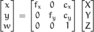
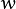
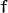
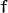

Camera calibration With OpenCV¶
Cameras have been around for a long-long time. However, with the introduction of the cheap pinhole cameras in the late 20th century, they became a common occurrence in our everyday life. Unfortunately, this cheapness comes with its price: significant distortion. Luckily, these are constants and with a calibration and some remapping we can correct this. Furthermore, with calibration you may also determine the relation between the camera’s natural units (pixels) and the real world units (for example millimeters).
Theory¶
For the distortion OpenCV takes into account the radial and tangential factors. For the radial factor one uses the following formula:
So for an old pixel point at  coordinates in the input image, its position on the corrected output image will be . The presence of the radial distortion manifests in form of the “barrel” or “fish-eye” effect.
coordinates in the input image, its position on the corrected output image will be . The presence of the radial distortion manifests in form of the “barrel” or “fish-eye” effect.
Tangential distortion occurs because the image taking lenses are not perfectly parallel to the imaging plane. It can be corrected via the formulas:
So we have five distortion parameters which in OpenCV are presented as one row matrix with 5 columns:
Now for the unit conversion we use the following formula:

Here the presence of  is explained by the use of homography coordinate system (and ). The unknown parameters are  and
and  (camera focal lengths) and which are the optical centers expressed in pixels coordinates. If for both axes a common focal length is used with a given
(camera focal lengths) and which are the optical centers expressed in pixels coordinates. If for both axes a common focal length is used with a given  aspect ratio (usually 1), then and in the upper formula we will have a single focal length . The matrix containing these four parameters is referred to as the camera matrix. While the distortion coefficients are the same regardless of the camera resolutions used, these should be scaled along with the current resolution from the calibrated resolution.
aspect ratio (usually 1), then and in the upper formula we will have a single focal length . The matrix containing these four parameters is referred to as the camera matrix. While the distortion coefficients are the same regardless of the camera resolutions used, these should be scaled along with the current resolution from the calibrated resolution.
The process of determining these two matrices is the calibration. Calculation of these parameters is done through basic geometrical equations. The equations used depend on the chosen calibrating objects. Currently OpenCV supports three types of objects for calibration:
- Classical black-white chessboard
- Symmetrical circle pattern
- Asymmetrical circle pattern
Basically, you need to take snapshots of these patterns with your camera and let OpenCV find them. Each found pattern results in a new equation. To solve the equation you need at least a predetermined number of pattern snapshots to form a well-posed equation system. This number is higher for the chessboard pattern and less for the circle ones. For example, in theory the chessboard pattern requires at least two snapshots. However, in practice we have a good amount of noise present in our input images, so for good results you will probably need at least 10 good snapshots of the input pattern in different positions.
Goal¶
The sample application will:
- Determine the distortion matrix
- Determine the camera matrix
- Take input from Camera, Video and Image file list
- Read configuration from XML/YAML file
- Save the results into XML/YAML file
- Calculate re-projection error
Source code¶
You may also find the source code in the samples/cpp/tutorial_code/calib3d/camera_calibration/ folder of the OpenCV source library or download it from here. The program has a single argument: the name of its configuration file. If none is given then it will try to open the one named “default.xml”. Here's a sample configuration file in XML format. In the configuration file you may choose to use camera as an input, a video file or an image list. If you opt for the last one, you will need to create a configuration file where you enumerate the images to use. Here’s an example of this. The important part to remember is that the images need to be specified using the absolute path or the relative one from your application’s working directory. You may find all this in the samples directory mentioned above.
The application starts up with reading the settings from the configuration file. Although, this is an important part of it, it has nothing to do with the subject of this tutorial: camera calibration. Therefore, I’ve chosen not to post the code for that part here. Technical background on how to do this you can find in the File Input and Output using XML and YAML files tutorial.
Explanation¶
Read the settings.
Settings s; const string inputSettingsFile = argc > 1 ? argv[1] : "default.xml"; FileStorage fs(inputSettingsFile, FileStorage::READ); // Read the settings if (!fs.isOpened()) { cout << "Could not open the configuration file: \"" << inputSettingsFile << "\"" << endl; return -1; } fs["Settings"] >> s; fs.release(); // close Settings file if (!s.goodInput) { cout << "Invalid input detected. Application stopping. " << endl; return -1; }
For this I’ve used simple OpenCV class input operation. After reading the file I’ve an additional post-processing function that checks validity of the input. Only if all inputs are good then goodInput variable will be true.
Get next input, if it fails or we have enough of them - calibrate. After this we have a big loop where we do the following operations: get the next image from the image list, camera or video file. If this fails or we have enough images then we run the calibration process. In case of image we step out of the loop and otherwise the remaining frames will be undistorted (if the option is set) via changing from DETECTION mode to the CALIBRATED one.
for(int i = 0;;++i) { Mat view; bool blinkOutput = false; view = s.nextImage(); //----- If no more image, or got enough, then stop calibration and show result ------------- if( mode == CAPTURING && imagePoints.size() >= (unsigned)s.nrFrames ) { if( runCalibrationAndSave(s, imageSize, cameraMatrix, distCoeffs, imagePoints)) mode = CALIBRATED; else mode = DETECTION; } if(view.empty()) // If no more images then run calibration, save and stop loop. { if( imagePoints.size() > 0 ) runCalibrationAndSave(s, imageSize, cameraMatrix, distCoeffs, imagePoints); break; imageSize = view.size(); // Format input image. if( s.flipVertical ) flip( view, view, 0 ); }
For some cameras we may need to flip the input image. Here we do this too.
Find the pattern in the current input. The formation of the equations I mentioned above aims to finding major patterns in the input: in case of the chessboard this are corners of the squares and for the circles, well, the circles themselves. The position of these will form the result which will be written into the pointBuf vector.
vector<Point2f> pointBuf; bool found; switch( s.calibrationPattern ) // Find feature points on the input format { case Settings::CHESSBOARD: found = findChessboardCorners( view, s.boardSize, pointBuf, CV_CALIB_CB_ADAPTIVE_THRESH | CV_CALIB_CB_FAST_CHECK | CV_CALIB_CB_NORMALIZE_IMAGE); break; case Settings::CIRCLES_GRID: found = findCirclesGrid( view, s.boardSize, pointBuf ); break; case Settings::ASYMMETRIC_CIRCLES_GRID: found = findCirclesGrid( view, s.boardSize, pointBuf, CALIB_CB_ASYMMETRIC_GRID ); break; }
Depending on the type of the input pattern you use either the findChessboardCorners or the findCirclesGrid function. For both of them you pass the current image and the size of the board and you’ll get the positions of the patterns. Furthermore, they return a boolean variable which states if the pattern was found in the input (we only need to take into account those images where this is true!).
Then again in case of cameras we only take camera images when an input delay time is passed. This is done in order to allow user moving the chessboard around and getting different images. Similar images result in similar equations, and similar equations at the calibration step will form an ill-posed problem, so the calibration will fail. For square images the positions of the corners are only approximate. We may improve this by calling the cornerSubPix function. It will produce better calibration result. After this we add a valid inputs result to the imagePoints vector to collect all of the equations into a single container. Finally, for visualization feedback purposes we will draw the found points on the input image using findChessboardCorners function.
if ( found) // If done with success, { // improve the found corners' coordinate accuracy for chessboard if( s.calibrationPattern == Settings::CHESSBOARD) { Mat viewGray; cvtColor(view, viewGray, CV_BGR2GRAY); cornerSubPix( viewGray, pointBuf, Size(11,11), Size(-1,-1), TermCriteria( CV_TERMCRIT_EPS+CV_TERMCRIT_ITER, 30, 0.1 )); } if( mode == CAPTURING && // For camera only take new samples after delay time (!s.inputCapture.isOpened() || clock() - prevTimestamp > s.delay*1e-3*CLOCKS_PER_SEC) ) { imagePoints.push_back(pointBuf); prevTimestamp = clock(); blinkOutput = s.inputCapture.isOpened(); } // Draw the corners. drawChessboardCorners( view, s.boardSize, Mat(pointBuf), found ); }
Show state and result to the user, plus command line control of the application. This part shows text output on the image.
//----------------------------- Output Text ------------------------------------------------ string msg = (mode == CAPTURING) ? "100/100" : mode == CALIBRATED ? "Calibrated" : "Press 'g' to start"; int baseLine = 0; Size textSize = getTextSize(msg, 1, 1, 1, &baseLine); Point textOrigin(view.cols - 2*textSize.width - 10, view.rows - 2*baseLine - 10); if( mode == CAPTURING ) { if(s.showUndistorsed) msg = format( "%d/%d Undist", (int)imagePoints.size(), s.nrFrames ); else msg = format( "%d/%d", (int)imagePoints.size(), s.nrFrames ); } putText( view, msg, textOrigin, 1, 1, mode == CALIBRATED ? GREEN : RED); if( blinkOutput ) bitwise_not(view, view);
If we ran calibration and got camera’s matrix with the distortion coefficients we may want to correct the image using undistort function:
//------------------------- Video capture output undistorted ------------------------------ if( mode == CALIBRATED && s.showUndistorsed ) { Mat temp = view.clone(); undistort(temp, view, cameraMatrix, distCoeffs); } //------------------------------ Show image and check for input commands ------------------- imshow("Image View", view);
Then we wait for an input key and if this is u we toggle the distortion removal, if it is g we start again the detection process, and finally for the ESC key we quit the application:
char key = waitKey(s.inputCapture.isOpened() ? 50 : s.delay); if( key == ESC_KEY ) break; if( key == 'u' && mode == CALIBRATED ) s.showUndistorsed = !s.showUndistorsed; if( s.inputCapture.isOpened() && key == 'g' ) { mode = CAPTURING; imagePoints.clear(); }
Show the distortion removal for the images too. When you work with an image list it is not possible to remove the distortion inside the loop. Therefore, you must do this after the loop. Taking advantage of this now I’ll expand the undistort function, which is in fact first calls initUndistortRectifyMap to find transformation matrices and then performs transformation using remap function. Because, after successful calibration map calculation needs to be done only once, by using this expanded form you may speed up your application:
if( s.inputType == Settings::IMAGE_LIST && s.showUndistorsed ) { Mat view, rview, map1, map2; initUndistortRectifyMap(cameraMatrix, distCoeffs, Mat(), getOptimalNewCameraMatrix(cameraMatrix, distCoeffs, imageSize, 1, imageSize, 0), imageSize, CV_16SC2, map1, map2); for(int i = 0; i < (int)s.imageList.size(); i++ ) { view = imread(s.imageList[i], 1); if(view.empty()) continue; remap(view, rview, map1, map2, INTER_LINEAR); imshow("Image View", rview); char c = waitKey(); if( c == ESC_KEY || c == 'q' || c == 'Q' ) break; } }
The calibration and save¶
Because the calibration needs to be done only once per camera, it makes sense to save it after a successful calibration. This way later on you can just load these values into your program. Due to this we first make the calibration, and if it succeeds we save the result into an OpenCV style XML or YAML file, depending on the extension you give in the configuration file.
Therefore in the first function we just split up these two processes. Because we want to save many of the calibration variables we’ll create these variables here and pass on both of them to the calibration and saving function. Again, I’ll not show the saving part as that has little in common with the calibration. Explore the source file in order to find out how and what:
bool runCalibrationAndSave(Settings& s, Size imageSize, Mat& cameraMatrix, Mat& distCoeffs,vector<vector<Point2f> > imagePoints )
{
vector<Mat> rvecs, tvecs;
vector<float> reprojErrs;
double totalAvgErr = 0;
bool ok = runCalibration(s,imageSize, cameraMatrix, distCoeffs, imagePoints, rvecs, tvecs,
reprojErrs, totalAvgErr);
cout << (ok ? "Calibration succeeded" : "Calibration failed")
<< ". avg re projection error = " << totalAvgErr ;
if( ok ) // save only if the calibration was done with success
saveCameraParams( s, imageSize, cameraMatrix, distCoeffs, rvecs ,tvecs, reprojErrs,
imagePoints, totalAvgErr);
return ok;
}
We do the calibration with the help of the calibrateCamera function. It has the following parameters:
The object points. This is a vector of Point3f vector that for each input image describes how should the pattern look. If we have a planar pattern (like a chessboard) then we can simply set all Z coordinates to zero. This is a collection of the points where these important points are present. Because, we use a single pattern for all the input images we can calculate this just once and multiply it for all the other input views. We calculate the corner points with the calcBoardCornerPositions function as:
void calcBoardCornerPositions(Size boardSize, float squareSize, vector<Point3f>& corners, Settings::Pattern patternType /*= Settings::CHESSBOARD*/) { corners.clear(); switch(patternType) { case Settings::CHESSBOARD: case Settings::CIRCLES_GRID: for( int i = 0; i < boardSize.height; ++i ) for( int j = 0; j < boardSize.width; ++j ) corners.push_back(Point3f(float( j*squareSize ), float( i*squareSize ), 0)); break; case Settings::ASYMMETRIC_CIRCLES_GRID: for( int i = 0; i < boardSize.height; i++ ) for( int j = 0; j < boardSize.width; j++ ) corners.push_back(Point3f(float((2*j + i % 2)*squareSize), float(i*squareSize), 0)); break; } }
And then multiply it as:
vector<vector<Point3f> > objectPoints(1); calcBoardCornerPositions(s.boardSize, s.squareSize, objectPoints[0], s.calibrationPattern); objectPoints.resize(imagePoints.size(),objectPoints[0]);
The image points. This is a vector of Point2f vector which for each input image contains coordinates of the important points (corners for chessboard and centers of the circles for the circle pattern). We have already collected this from findChessboardCorners or findCirclesGrid function. We just need to pass it on.
The size of the image acquired from the camera, video file or the images.
The camera matrix. If we used the fixed aspect ratio option we need to set the
to zero:cameraMatrix = Mat::eye(3, 3, CV_64F); if( s.flag & CV_CALIB_FIX_ASPECT_RATIO ) cameraMatrix.at<double>(0,0) = 1.0;
The distortion coefficient matrix. Initialize with zero.
distCoeffs = Mat::zeros(8, 1, CV_64F);
For all the views the function will calculate rotation and translation vectors which transform the object points (given in the model coordinate space) to the image points (given in the world coordinate space). The 7-th and 8-th parameters are the output vector of matrices containing in the i-th position the rotation and translation vector for the i-th object point to the i-th image point.
The final argument is the flag. You need to specify here options like fix the aspect ratio for the focal length, assume zero tangential distortion or to fix the principal point.
double rms = calibrateCamera(objectPoints, imagePoints, imageSize, cameraMatrix,
distCoeffs, rvecs, tvecs, s.flag|CV_CALIB_FIX_K4|CV_CALIB_FIX_K5);
The function returns the average re-projection error. This number gives a good estimation of precision of the found parameters. This should be as close to zero as possible. Given the intrinsic, distortion, rotation and translation matrices we may calculate the error for one view by using the projectPoints to first transform the object point to image point. Then we calculate the absolute norm between what we got with our transformation and the corner/circle finding algorithm. To find the average error we calculate the arithmetical mean of the errors calculated for all the calibration images.
double computeReprojectionErrors( const vector<vector<Point3f> >& objectPoints, const vector<vector<Point2f> >& imagePoints, const vector<Mat>& rvecs, const vector<Mat>& tvecs, const Mat& cameraMatrix , const Mat& distCoeffs, vector<float>& perViewErrors) { vector<Point2f> imagePoints2; int i, totalPoints = 0; double totalErr = 0, err; perViewErrors.resize(objectPoints.size()); for( i = 0; i < (int)objectPoints.size(); ++i ) { projectPoints( Mat(objectPoints[i]), rvecs[i], tvecs[i], cameraMatrix, // project distCoeffs, imagePoints2); err = norm(Mat(imagePoints[i]), Mat(imagePoints2), CV_L2); // difference int n = (int)objectPoints[i].size(); perViewErrors[i] = (float) std::sqrt(err*err/n); // save for this view totalErr += err*err; // sum it up totalPoints += n; } return std::sqrt(totalErr/totalPoints); // calculate the arithmetical mean }
Results¶
Let there be this input chessboard pattern which has a size of 9 X 6. I’ve used an AXIS IP camera to create a couple of snapshots of the board and saved it into VID5 directory. I’ve put this inside the images/CameraCalibration folder of my working directory and created the following VID5.XML file that describes which images to use:
{kind=link}
<?xml version="1.0"?>
<opencv_storage>
<images>
images/CameraCalibration/VID5/xx1.jpg
images/CameraCalibration/VID5/xx2.jpg
images/CameraCalibration/VID5/xx3.jpg
images/CameraCalibration/VID5/xx4.jpg
images/CameraCalibration/VID5/xx5.jpg
images/CameraCalibration/VID5/xx6.jpg
images/CameraCalibration/VID5/xx7.jpg
images/CameraCalibration/VID5/xx8.jpg
</images>
</opencv_storage>
Then passed images/CameraCalibration/VID5/VID5.XML as an input in the configuration file. Here’s a chessboard pattern found during the runtime of the application:
After applying the distortion removal we get:

The same works for this asymmetrical circle pattern by setting the input width to 4 and height to 11. This time I’ve used a live camera feed by specifying its ID (“1”) for the input. Here’s, how a detected pattern should look:
{kind=link}
In both cases in the specified output XML/YAML file you’ll find the camera and distortion coefficients matrices:
<Camera_Matrix type_id="opencv-matrix">
<rows>3</rows>
<cols>3</cols>
<dt>d</dt>
<data>
6.5746697944293521e+002 0. 3.1950000000000000e+002 0.
6.5746697944293521e+002 2.3950000000000000e+002 0. 0. 1.</data></Camera_Matrix>
<Distortion_Coefficients type_id="opencv-matrix">
<rows>5</rows>
<cols>1</cols>
<dt>d</dt>
<data>
-4.1802327176423804e-001 5.0715244063187526e-001 0. 0.
-5.7843597214487474e-001</data></Distortion_Coefficients>
Add these values as constants to your program, call the initUndistortRectifyMap and the remap function to remove distortion and enjoy distortion free inputs for cheap and low quality cameras.
You may observe a runtime instance of this on the YouTube here.
Help and Feedback
You did not find what you were looking for?- Ask a question on the Q&A forum.
- If you think something is missing or wrong in the documentation, please file a bug report.